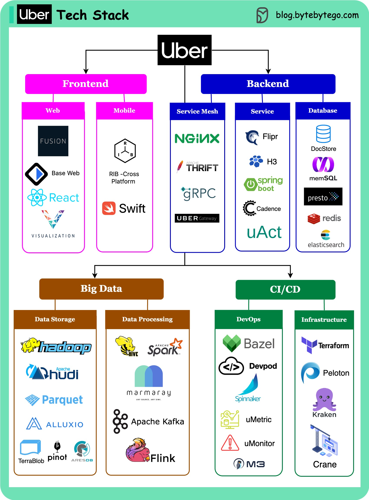

This post is based on research from many Uber engineering blogs and open-source projects. If you come across any inaccuracies, please feel free to inform us. The corresponding links are added in the comment section.
Web frontend: Uber builds Fusion.js as a modern React framework to create robust web applications. They also develop visualization.js for geospatial visualization scenarios.
Mobile side: Uber builds the RIB cross-platform with the VIPER architecture instead of MVC. This architecture can work with different languages: Swift for iOS, and Java for Android.
Service mesh: Uber built Uber Gateway as a dynamic configuration on top of NGINX. The service uses gRPC and QUIC for client-server communication, and Apache Thrift for API definition.
Service side: Uber built a unified configuration store named Flipr (later changed to UCDP), H3 as a location-index store library. They use Spring Boot for Java-based services, uAct for event-driven architecture, and Cadence for async workflow orchestration.
Database end: the OLTP mainly uses the strongly-consistent DocStore, which employs MySQL and PostgreSQL, along with the RocksDB database engine.
Big data: managed through the Hadoop family. Hudi and Parquet are used as file formats, and Alluxio serves as cache. Time-series data is stored in Pinot and AresDB.
Data processing: Hive, Spark, and the open-source data ingestion framework Marmaray. Messaging and streaming middleware include Apache Kafka and Apache Flink.
DevOps side: Uber utilizes a Monorepo, with a simplified development environment called devpod. Continuous delivery is managed through Netflix Spinnaker, metrics are emitted to uMetric, alarms on uMonitor, and a consistent observability database M3.